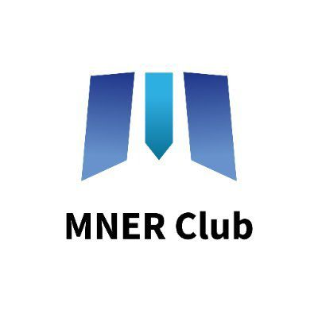

Sustainable yield
Looking beyond incentives to explain where yield is sourced and how models are structured.
Making complex token and yield concepts easier for a wider Web3 audience to understand.

My contributions explore sustainable yield, DeFi token economics, and the link between real-world activity and onchain products.
Looking beyond incentives to explain where yield is sourced and how models are structured.
Explaining concepts related to the MNER ecosystem in accessible language.
Connecting technical design to questions readers actually have.
Explore the project's own information and official channels. These are external resources, separate from my portfolio pieces.